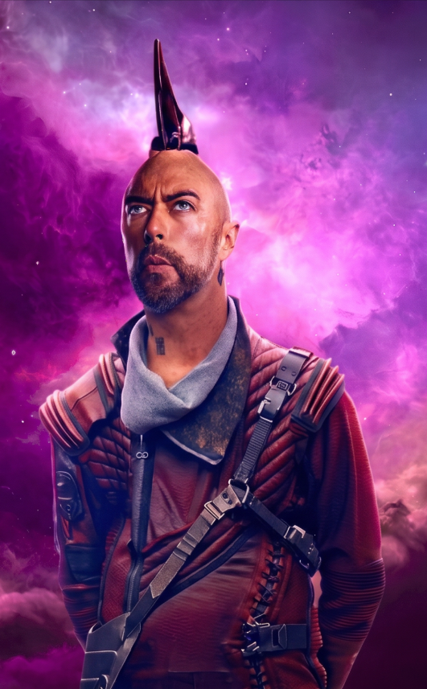
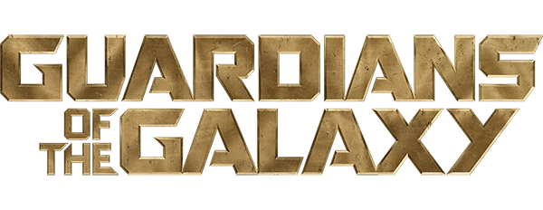

HÉROES RELACIONADOS
ORIGEN BIOLÓGICO
XANDARIANO EX PIRATA DE CORAZÓN
"Él no usaba su mente para volar la flecha, usaba su corazón."
~ Kraglin
K
Kraglin Obfonteri fue el leal primer oficial de la flota de Devastadores de Yondu Udonta. Tras la disolución del clan y la heroica partida de su capitán, heredó la mística flecha teledirigida y pasó meses entrenando con su silbido para dominarla. Integrado por completo como miembro formal de los Guardianes, lucha en el espacio para honrar el legado místico de su mentor.
PROCEDENCIA
XANDAR / CLAN DEVASTADOR

UNIVERSO
MCU / MARVEL COMICS
MARVEL